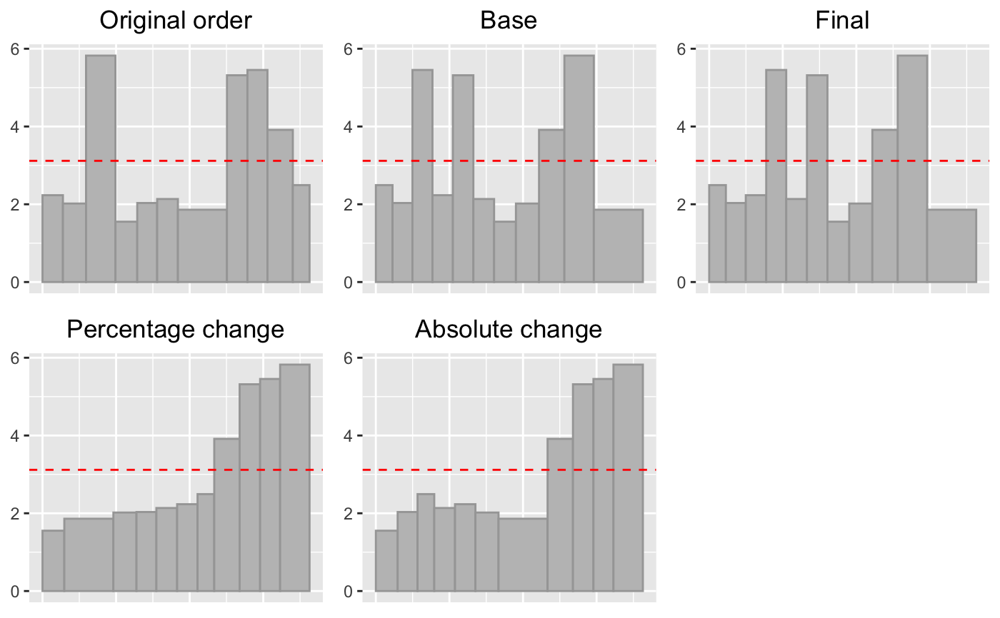
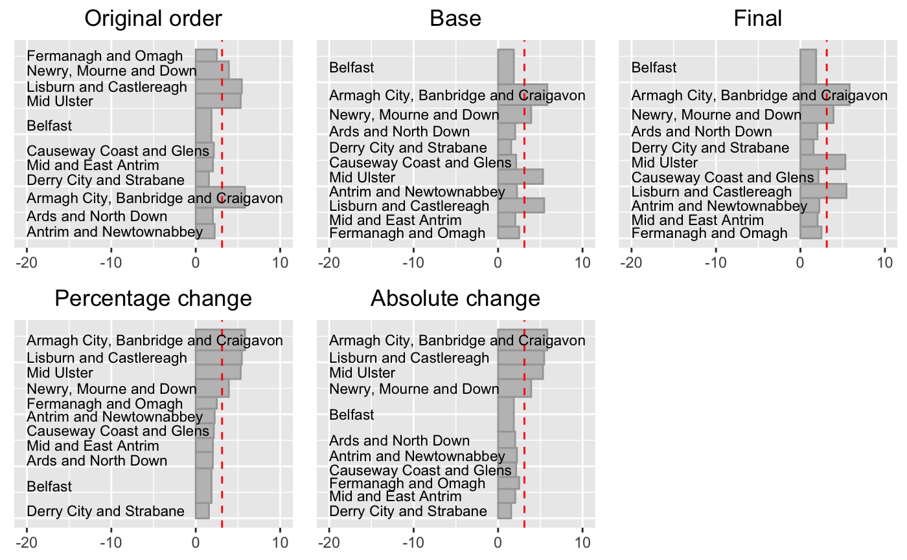

sort5.RdThis function draws plots to compare the results of different sorting methods for a single grouping variable
sort5(data, gvar, weight=1, v1, v2)
| data | the dataset to be analysed |
|---|---|
| gvar | the grouping variable to be used in all five plots |
| weight | a variable for weighting the individual items, the default is for every item to be weighted equally |
| v1 | the variable specifying the start value in the comparison |
| v2 | the variable specifying the end value in the comparison |
This function prepares UpAndDown plots showing percentage and absolute changes for one grouping variable with five different sortings.
To draw an unlabelled or labelled set of plots, apply grid.arrange to the appropriate output of sort5.
five unlabelled vertical UpAndDown plots
five horizontal UpAndDown plots with labelling of groups
library(gridExtra) xs <- sort5(NIpop, gvar="LGD2014_name", v1="y2011", v2="y2017") grid.arrange(xs$uad)